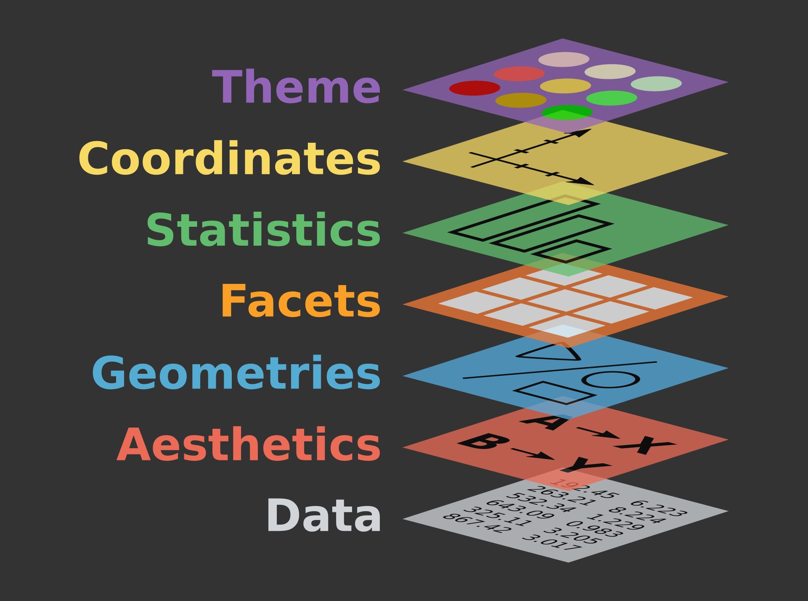

Lab 2: Visualizing Data
PSYC*1010: Making Sense of Data in Psychological Research
Getting started
In this lab, we’ll be using R to help us visualize data. Before starting this lab, make sure to have read Chapter 2: Using Graphs to Visualize Data from your textbook.
NoteLearning objectives
By the end of this lab, you should be able to:
- Describe what packages in
Rare - Recognize the initial steps of exploring, preparing, and visualizing data
- Use
dplyr()to create frequency tables - Use
ggplot()to create different types of graphs (bar graphs, histograms, and scatterplots) - Apply best practices for creating graphs
- Visually describe the shape of a distribution
Visualizing data
Whenever we set out to analyze data, it is critical to start by really understanding the data that you are working with. One of the most helpful things you can do here is to visualize what your data looks like. In addition to helping us communicate our statistical arguments, learning how to visualize our data will also help us to interpret and evaluate other data visualizations that we may come across.
Packages
Before we get started, we will have to learn about packages (or libraries). When you first install R onto your computer, you’ll have access to many basic functions like print() and sum(). However, other users in the R coding community are always writing and distributing new functions for the rest of the world to use. You can kind of think of this like downloading new DLC content to expand what you can do in a video game (except it is freely available!) In R, these collections of functions for download are called packages. Rather than having to re-invent the wheel and re-write code from scratch each time we want to do something new, we can load in functions already contained within these accessible packages instead.
Installing new packages into your R environment is a two-step process:
First, you need to download and install them onto your computer, typically using the function
install.packages().Secondly, you need to actually load the package so that you can use it in your current code, using the function
library().
Today, we’ll be installing and using two packages. dplyr (pronounced “dee-ply-er”) contains a few different functions that are helpful for preparing and organizing data, and ggplot2 (usually referred to us just “gee-gee-plot”) contains functions that can help us make all sorts of different graphs.
Run the code in the window below to install and load in the dplyr and ggplot2 packages. Note that you might get some warning messages here, but that should be OK!
Important
When working with R, you will need to load in the packages each time you use them. Since we are using R online, this means that you will need to re-install and re-load these packages each time you refresh the page.
Exploring our data
Today, we will be using a dataset of 500 individuals drawn from the National Health and Nutrition Examination Survey (NHANES). NHANES is a survey that aims to measure the health and nutrition of adults and children in the United States. The program has been collecting data on a regular basis since it started in the early 1960s, and contains a large amount of data about various demographic, physical, nutritional, and lifestyle characteristics.
Let’s load in the data using the read.csv() function. When working with large datasets, it is sometimes helpful to only take a look at the first few rows using the head() function.
As you can see, there are quite a few different variables in this dataset to work with, which can quickly become overwhelming! Here, creating visualizations allows us to better summarize and understand the data that we are working with.
Frequency tables with dplyr
Let’s start by making a frequency table. A frequency table organizes our data so that we can see the number of participants (or frequency) that corresponds to a particular response for a given variable.
We’ll be using the count() function from the dplyr package to create a frequency table. A handy feature of the dplyr package is the pipe, which looks like |>. The pipe allows us to take the output of one function and send it directly to the next, which helps us to chain together different functions that we might want to apply to the same dataset.
To create a frequency table using dplyr, we need to specify both the name of the dataset we are working with and the name of the column that we want to summarize.
Let’s use the code below to create a frequency table for the Education variable, which captures someone’s highest degree of education obtained.
Great job, you just created a frequency table! Here, the frequency of a given response is denoted by the n column. Oftentimes, it is helpful to also know the relative frequency to tell us the percentage of participants corresponding to a given response. To do so, we’ll use the mutate() function, which allows us to create or modify columns in our dataset.
Let’s use the mutate() function to create a new column that divides each frequency by the total number of participants we are working with.
CautionRecap
Which scale of measurement would best describe the Education variable?
By default, R will sort groups by alphabetical order. However, it is oftentimes helpful to provide some sort of order when we are creating frequency tables to make them easier to read. Here, we can first convert Education into a factor, which allows us to specify an order to our groups (or levels), before creating our frequency table.
TipActivity 1
Now it’s your turn! Create a frequency table to summarize the MaritalStatus variable, which captures someone’s marital status (as either “Married”, “NeverMarried”, “LivePartner”, “Divorced”, “Separated”, or “Widowed”). Remember, R is a bit sensitive so it will have trouble even if you make a little change to the name of a variable you are working with.
Creating graphs with ggplot2
In addition to frequency tables, we can create graphs to help us visualize your data. Here, we’ll make a few basic graphs using a package called ggplot2, named after the Grammar of Graphics framework. ggplot2 works by starting from a blank canvas and building up layer by layer, allowing us to make some beautiful data visualizations.
In general, a ggplot is made up of three key components:
- Data: First, you start off by specifying which data you want to work with
- Aesthetics: Next, you will use
aes()to indicate what variables you want to map onto the x and y axes (and optionally, features like colours, sizes, and shapes) - Geometry: Last, you will specify what type of plot you want by using a
geom_*()function, where the * indicates a different type of plot (e.g.,geom_bar()makes bar graphs,geom_line()makes line graphs, etc.)
Afterwards, you can further customize your plot to tweak things like titles, labels, legends, colour palettes, axis tick marks, etc.

Bar graphs
For our first graph, let’s compare the frequencies of each Education level and plot it as a bar graph, which helps us compare values across categories. For our bar graph, our key components will be:
- Data: The NHANES dataset we are working with. Like with our frequency tables, we’ll re-order the levels to make it a bit more intuitive to read.
- Aesthetics: We’ll map our different
Educationlevels onto the x-axis (horizontal). - Geometry: Since we’re creating a bar graph, we will use the
geom_bar()function. This will automatically calculate the frequencies and map it onto the y-axis (vertical).
Let’s put this altogether to make our bar graph.
Great, we just made our first bar graph! Note that we had seen this data being presented both as a frequency table and as a bar graph. Depending on what you are using it for, you may opt to use one or the other. One thing that you might have noticed is that ggplot uses a + to add on additional layers instead of the pipe (|>) we used earlier.
Let’s use these additional layers to customize our plot a bit.
- Firstly, you might notice that our axes labels are a bit uninformative. It’s always a good idea to give your graph informative titles and labels to help readers better interpret them.
- Additionally, when creating data visualizations, it is usually a good idea to minimize the visual clutter to help your data better show through.
- That being said, there’s a lot room for creativity in your figures, as long as you’re communicating your findings effectively, ethically, and efficiently.
Here, we’ll add a title and labels to our graph with the labs() function. We’ll also clean up our graph a bit using the theme_minimal() function. Last, we’ll add a color by adding a fill argument to our geom_bar() function.
Scatterplots
Now that we know how ggplot2 works, we can apply this same idea to make other types of graphs. We create a scatterplot to explore the relationship between different continuous variables. In this example, let’s look at the relationship between Weight and Height in our dataset. Many of the steps involved will be the same:
- Data: Just like before, we’ll use our NHANES dataset. Note that we will not need to re-order our levels because we are working with two continuous variables.
- Aesthetics: Here, we need to specify which variable will be on our x-axis and which will be on our y-axis. In this case, we’ll put
Weighton our x-axis andHeighton our y-axis. - Geometry: To create a scatterplot, we’ll use the
geom_point()function to plot each participant as a datapoint. - Just like before, we’ll customize our plot a bit to add titles and axes labels, and minimize visual clutter.
Let’s use the code below to make a scatterplot to visualize the relationship between Weight and Height.
Histograms
The last graph that we’ll cover today is a histogram. Although a histogram looks quite a bit like a bar graph, it helps us to visualize continuous, rather than categorical data. This is particularly helpful in showing us the distribution of a given variable. Using the same general idea as before, let’s use a histogram to visualize the distribution of our Height variable.
This time, we’ll use the geom_histogram() function to make a histogram for our Height variable.
TipActivity 2
One of the variables in the NHANES dataset is called DaysMentHlthBad, which is the number of days that the participant reported that their mental health was not good out of the past 30 days. Use the code below to plot a histogram of the DaysMentHlthBad variable. You can use the link here to pick your own colour for your graph: https://r-charts.com/colors/
Other types of graphs
Although we’ve only covered a few of the basic graphs in this lab, you can use the same general principles to create a whole host of different graphs. For example, you can use the geom_violin() function to make violin plots, geom_density() to make density plots, geom_jitter() to make jitter plots, and so on! You can check out the gallery here to get an idea of the wide range of graphs you can make using ggplot2: https://r-graph-gallery.com/
That’s all for now, great work!
Use what you have learned to answer some questions about this lab in the corresponding Assignment on CourseLink!
References
Centers for Disease Control and Prevention (CDC). National Center for Health Statistics (NCHS). National Health and Nutrition Examination Survey Data. Hyattsville, MD: U.S. Department of Health and Human Services, Centers for Disease Control and Prevention. Sample data from: https://www.openintro.org/data/index.php?data=nhanes.samp.adult.500